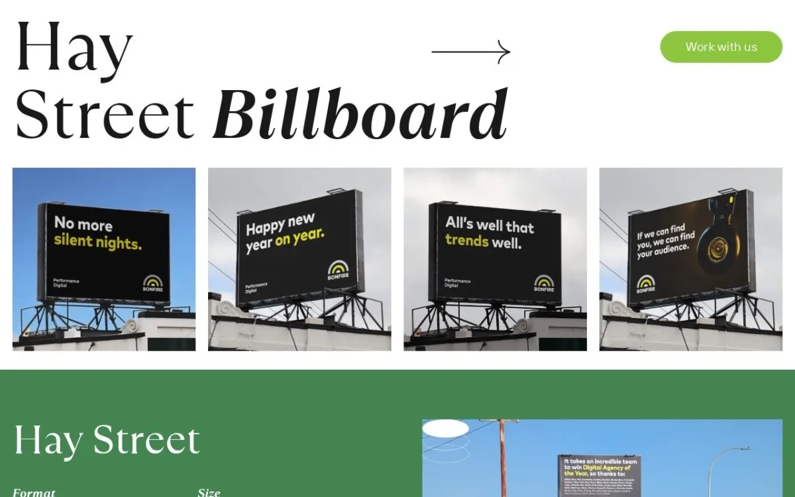
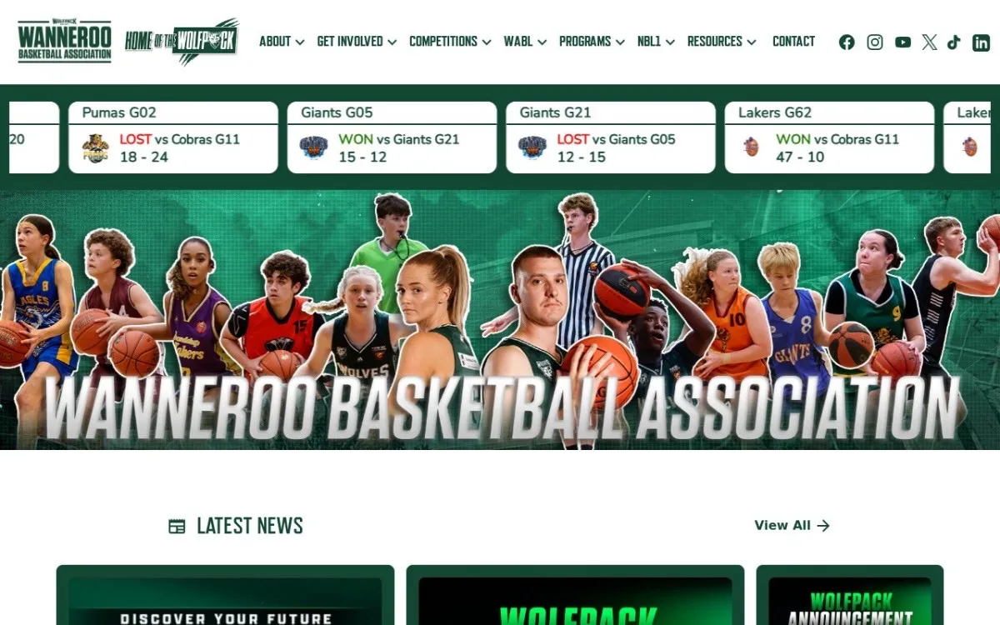
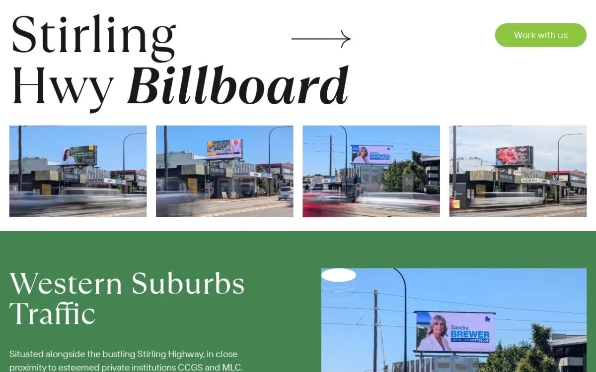

Perth, Western Australia
A small studio in Perth. Gold mines, laboratories, and the firms that supply them — two projects at a time.
Scroll
Selected work
Fourteen builds. Gold mining, life sciences, professional services, out-of-home. No logo wall, no testimonials, no case studies written to be skimmed. We’ll walk you through the relevant ones on a call.



Eight more we don’t show here. Ask what’s relevant to you.
Who you’d be working with
There isn’t a “we”. There’s me, and a build team I’ve worked with for years.
I’m Mike. Over a decade of this, most of it for companies that don’t advertise themselves — mining operators, laboratories, professional firms. Businesses that are very good at something difficult and have no interest in becoming marketers on the side.
You deal with me. Not a salesperson who vanishes once the deposit clears, and not an account manager relaying your message to someone you’ll never meet. The design and development team sits in Vietnam, they’ve been with me for years, and they’re the reason the work costs what it costs.
I’ll also tell you when something isn’t worth doing. Half the jobs that come through here don’t need what the last agency sold them. That conversation is free, and it’s usually the most useful one we have.
Taking work
One person runs every project here, and that person is Mike. So the number we can take at once is small, and the ones we take are the ones we’d be proud to point at. If that sounds precious, it is. It’s also why the work looks like it does.
Enquire